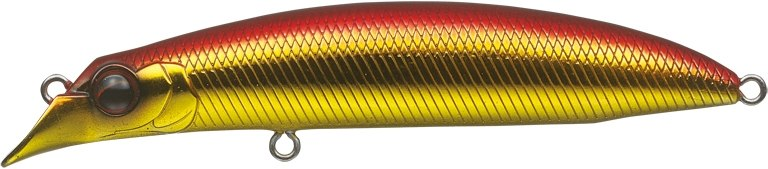
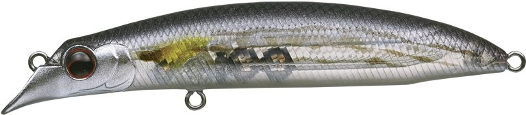
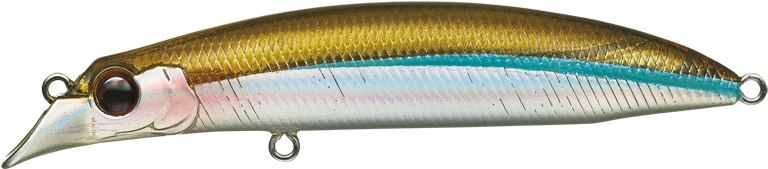
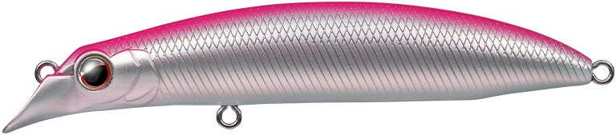

トゥルーラウンド94
（True round 94）
トゥルーラウンド94（True round 94）はEVERGREEN（エバーグリーン）のリップレスミノーです。
セレクティブな状況で食わせるサイズ。主なターゲットはヒラスズキ・シーバスです。
津留崎義孝さんのワールドスタンダードミノー「トゥルーラウンド115F」のダウンサイジングモデル。キビナゴなどの小型ベイトのサイズに合い、オリジナルサイズでは食わないシビアな状況で、小技を使って口を使わせられます。

画像出典:EVERGREEN公式HP
スペック
- メーカー
- EVERGREEN（エバーグリーン）
- タイプ
- スローフローティング
- 全長
- 9.4cm
- 重量
- 10.5g
- 潜行レンジ
- 0.8〜1.5m
- フック
- フロント#5・リア#5
- リング
- フロント#3・リア#3
- プロデュース
- 津留崎義孝
- 価格
- 2,100円（税別）
▼今すぐチェック

トゥルーラウンド94の特徴
115Fの飛びと泳ぎを、小型ベイトに合うサイズで
-
ライナー弾道で飛ぶ
オリジナル同様、荒天を切り裂いてライナー弾道で飛ぶ飛行性能。着水後は2つのウエイトを即座に固定し、素早く立ち上がる。
-
リップレスとリップ付きのいいとこ取り
特殊形状オフセット傾斜ヘッドの下側のカップが水をしっかりつかみ、低速でも反応よく動く。上下のオフセットで適度に水を逃し、高速や荒波でもバランスを崩さない。
-
自由にセッティングできるファットボディ
太軸フック・大型フック・太いライン・ウエイト追加などの調整を前提にしたボディバランス。状況や魚種に合わせて自由にセッティングできる（セッティングによってはシンキングになる）。
トゥルーラウンド94の使い方
基本はただ巻きです。115Fより潜るので（0.8〜1.5m）、サラシの少し下のレンジを引けます。
スローフローティングなので、巻くのを止めてゆっくり浮かせたり、軽いトゥイッチを入れたりと、小技で食わせる使い方もできます。
トゥルーラウンド94の得意な状況
キビナゴなど小型のベイトを食べているヒラスズキ・シーバスを狙う時が得意です。
115Fでは反応がない、プレッシャーの高い場面でのフォローにも向いています。
ワンポイント
2026年には新色「フルメタルUV」「サキツルブルー」「サキツルピンク」が追加されています。
トゥルーラウンドのサイズの使い分け
| モデル | 全長・重さ | タイプ・潜行レンジ | こんな時に |
|---|---|---|---|
| トゥルーラウンド94（この記事） | 9.4cm・10.5g | スローフローティング・0.8〜1.5m | キビナゴなど小型ベイト、シビアな状況で食わせたい時 |
| トゥルーラウンド115F | 11.5cm・18.5g | フローティング・0.5〜1.0m | 荒れたサラシや遠投が必要な時。まずはこれ |
※数値は公式ページより。
オススメカラー
トゥルーラウンド94はカラーが豊富です。そのうち4色を紹介します（画像は公式より）。

#702 アカキンホロ赤金のホロ。まず1つ選ぶならこの色。

#712 イナッコ透け感のあるイナッコカラー。ボラの稚魚を食べている時に。

#761 キビナゴHCキビナゴパターンに合わせたカラー。

#896 サキツルピンク2026年の新色。津留崎さん考案のスペシャルカラー。
画像出典:EVERGREEN公式HP
トゥルーラウンド94に似ているルアー
-
 トゥルーラウンド115F
エバーグリーン
詳細はこちら＞
トゥルーラウンド115F
エバーグリーン
詳細はこちら＞
同じシリーズのオリジナルサイズ。
-
 コスケ110F
アイマ
詳細はこちら＞
コスケ110F
アイマ
詳細はこちら＞
シーバスの定番フローティングミノー。
-
 ブローウィン80S
ブルーブルー
詳細はこちら＞
ブローウィン80S
ブルーブルー
詳細はこちら＞
小型ベイトに合わせやすいシンキングミノー。